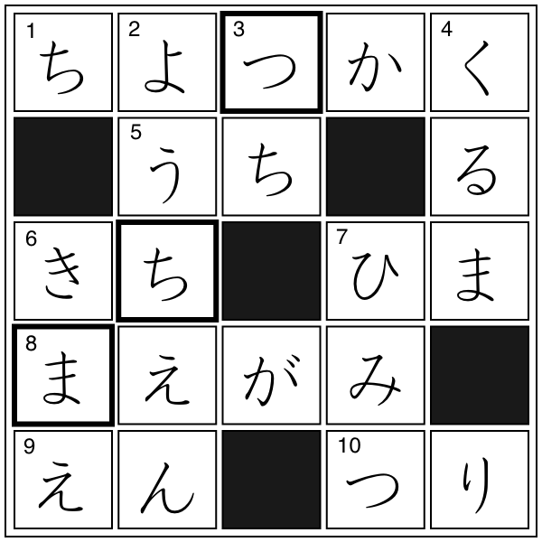

クロスワード
解答
クロスワード

【→
問題
〔
PDFファイル
〕
】
太枠の文字を組み合わせてできる単語
まつち（マッチ）
例文
マッチでタバコに火をつける。
単語リスト
語(読み)
漢字／原語
分類
発音
中文意思
▼
は１級相当の単語と漢字、
▽
は１級リスト外の漢字を示す
ようちえん
幼
▼
稚園
0
つち
土
2
くるま
車
0
▼
きまえ
気前
0
ひみつ
▼
秘
▼
密
0
ちょっかく
直角
-ナ
1
うち
内
3
きち
基地
0
ひま
▼
暇
-ナ
1
まえがみ
前髪
2
えん
円
1
つり
▼
釣り
0
マッチ
match
外来語
0
ページの先頭へ↑
←ひとつ前に戻る
目次へ
トップページへ